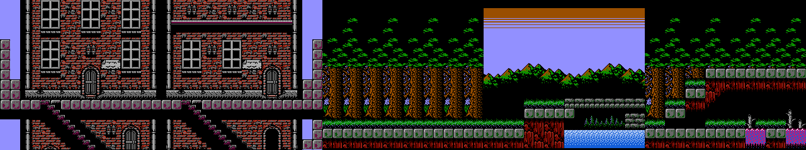

Regional output
Five screens, one stitched image
Validated
Inferred
Drag or scroll horizontally if the strip is wider than the viewport.
Next demo
The renderer now stitches ROM-native screens into a first regional strip: Jova town, Jova Woods, the bridge, and the next woods screen toward Veros.

Regional output
Confidence layer
What changed
Region entries can reference a validated descriptor or derive a candidate descriptor from manifest context. That keeps the renderer honest about which screens are proven and which are plausible but still need emulator fixtures.
Current limits
Next step
The next practical move is to add save-state fixtures for the bridge and Veros Woods, compare them, and then let the same data model grow toward Veros and beyond.